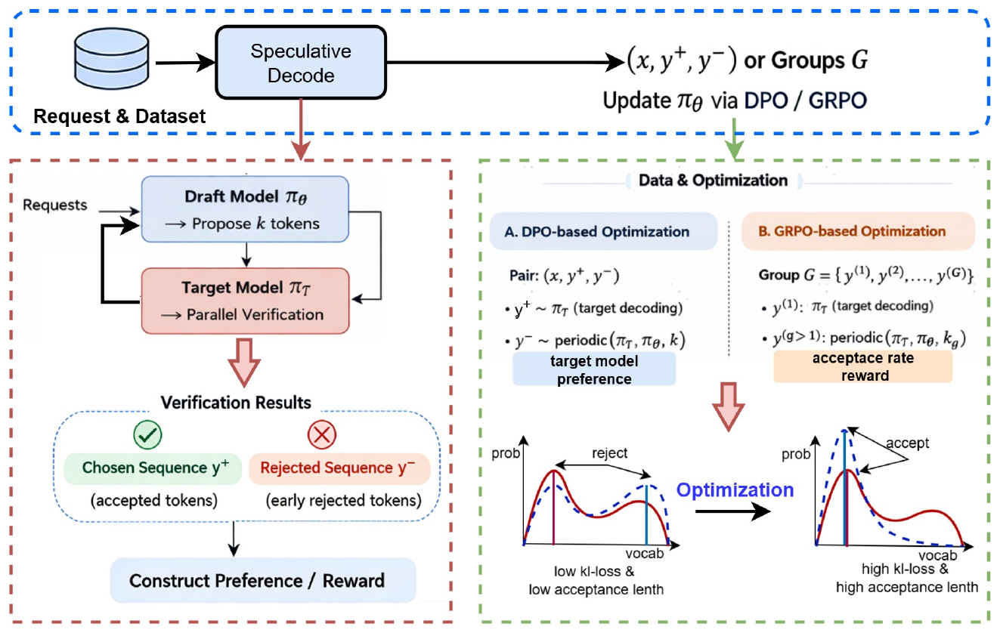

投机解码用一个小的草稿模型先猜几个 token，再让大模型一次性并行验证，猜中的越多（接受长度越长）越快。草稿模型通常用蒸馏训练：让它的输出概率分布尽量贴近目标模型，包括目标模型自己也不确定的那些低概率 token。海信的作者认为这和真正目标不一致：验证时只看草稿给出的 token 能否被目标模型接受，草稿只要把最可能的几个 token 排对就够了，不必复现整个分布。他们提出 RCSD，在 EAGLE 框架里用 HASS（一种按蒸馏训练草稿模型的方法）训好的草稿模型作为起点，再用 DPO 或 GRPO 继续训练，训练信号直接来自"目标模型自己生成的序列"和"草稿模型参与生成的序列"之间的对比。在 Qwen3-1.7B 和 Llama-3.1-8B 上，接受长度在 HumanEval、MT-Bench、GSM8K、ShareGPT 四个数据集和草稿步数 3–6 的所有设置中都高于 HASS，论文报告平均提高 35%，在 ShareGPT 等实际负载上端到端快 1.35 倍。
1. 问题：蒸馏目标和接受长度不一致
蒸馏最小化的是前向 KL 散度，会迫使草稿模型把容量分给目标分布里的所有区域，包括低概率的尾部。草稿模型比目标模型小几个数量级，做不到完全复现。作者的论点是：KL 损失低不等于接受率高，KL 损失高也可能接受率很好，关键在于前几个候选 token 的排序是否和目标模型一致。

2. 方法
两种训练方式都从 HASS 训好的草稿模型出发，并以它作为冻结的参考模型。
DPO 版。 对同一个提示构造一对序列：
- "好"的序列：完全由目标模型自回归生成；
- "差"的序列：目标模型生成 1 个 token，草稿模型不经验证接着生成 k 个，如此交替。
然后用标准 DPO 损失训练草稿模型，让它对"好"序列的概率相对参考模型上升、对"差"序列的概率下降。"差"序列中由目标模型生成的那些 token 在计算损失时被屏蔽，避免惩罚本来就和目标模型一致的部分。
GRPO 版。 对同一个提示生成一组序列：一条由目标模型直接生成，另外几条按不同的 k（每次草稿连续生成 1、2、3 个 token）交替生成。每条序列的分数是两项标准化后相加：目标模型给这条序列的对数概率，和这条序列的接受率。再用 GRPO 的裁剪目标加 KL 约束训练。
3. 实验
3.1 接受长度
这组实验检验 DPO/GRPO 继续训练能否让草稿模型被接受的 token 更多。设置：Qwen3-1.7B 和 Llama-3.1-8B 作为目标模型，在 90% 的 ShareGPT 上训练；在 HumanEval、MT-Bench、GSM8K 和剩下 10% 的 ShareGPT 上测试；草稿步数（每轮猜几个 token）从 3 到 6。
Qwen3-1.7B，步数 6 时的平均接受长度：
| 数据集 | HASS | HASS + DPO | HASS + GRPO |
|---|---|---|---|
| HumanEval | 2.533 | 3.014 | 3.015 |
| MT-Bench | 2.092 | 2.571 | 2.601 |
| GSM8K | 2.176 | 3.212 | 3.246 |
| ShareGPT | 2.220 | 3.089 | 3.136 |
Llama-3.1-8B，步数 6：
| 数据集 | HASS | HASS + DPO | HASS + GRPO |
|---|---|---|---|
| HumanEval | 3.202 | 3.540 | 3.558 |
| MT-Bench | 2.497 | 2.731 | 2.736 |
| GSM8K | 2.756 | 3.008 | 3.025 |
| ShareGPT | 2.672 | 3.779 | 3.828 |
结果：两种方法都明显超过 HASS，GRPO 多数情况下略好于 DPO，但两者差距很小。步数越大提升越多，论文举例 Qwen3-1.7B 在 GSM8K 上相对提升从步数 3 的 31% 增加到步数 6 的 49%。Llama-3.1-8B 上 ShareGPT 提升最明显，这也是训练数据所在的分布。
3.2 吞吐
这组实验检验接受长度的提升能否变成实际速度。设置：Llama-3.1-8B-Instruct，SGLang 5.5.0。论文没有写明这组的草稿步数，图中的接受长度与上表步数 3 的数值相同。

| 数据集 | 无投机解码 | HASS | HASS + DPO | HASS + GRPO |
|---|---|---|---|---|
| HumanEval | 90.7 | 163.1 | 173.1 | 173.8 |
| MT-Bench | 90.6 | 134.2 | 141.9 | 143.1 |
| GSM8K | 90.8 | 150.5 | 159.7 | 160.3 |
| ShareGPT | 90.2 | 142.3 | 176.1 | 176.6 |
（单位：输出 token/s）结果：ShareGPT 上 GRPO 版从 142.3 提到 176.6 token/s，其他三个数据集提升较小。
4. 局限
- 论文多处声称"不影响生成质量"，但没有给出质量评测结果。按投机解码的验证机制，输出应由目标模型决定，但实验部分没有对此单独验证。
- 标题写的是"持续学习"和"特定领域"，正文没有持续学习的实验，评测集也是通用数据集，没有领域专属场景。
- 方法描述前后不完全一致：Figure 3 左侧说"好/差"序列来自验证中被接受和被提前拒绝的 token，而方法章节和右侧写的是"目标模型单独生成"对"目标与草稿交替生成"。
- Figure 2 标题说基线是 SFT，图例写的是 HASS。
- 吞吐只测了 Llama-3.1-8B 一组配置；没有报告训练成本，也没有和其他非蒸馏训练方法对比。
5. 实践意义
如果你已经部署了 EAGLE/HASS 风格的草稿模型，这篇论文提示一个低成本的后续步骤：用目标模型自己生成的数据，在现有草稿模型上再做一轮 DPO 继续训练，数据构造不需要人工标注或额外奖励模型。GRPO 版只比 DPO 稍好，实现更复杂。由于缺少质量评测和训练成本数据，上线前需要自己核对输出一致性和训练开销。